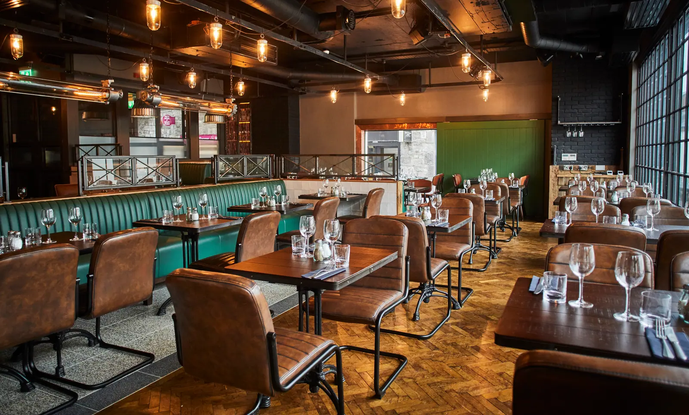
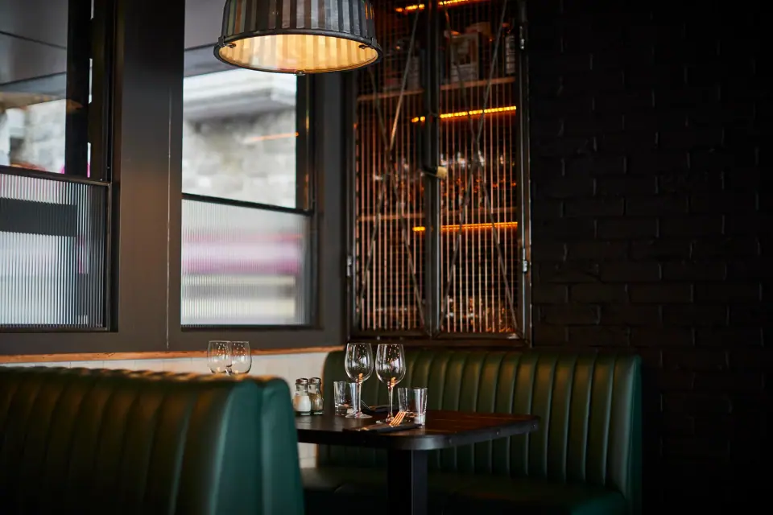
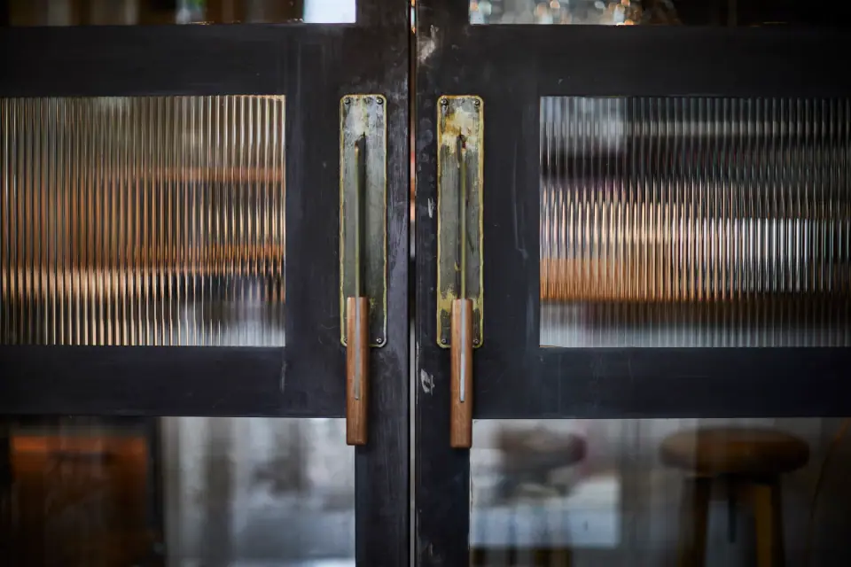

Steakhouse & cocktail venue · Kilkenny
Redefine your steakhouse experience
Delicious steaks and comfort food in the heart of Kilkenny City.
- Now
- HoursWed & Thu 16:30–21:30
Fri 16:30–22:00
Sat 16:00–22:00
Sun 16:00–21:00 - AddressSaint Kieran's Street, Kilkenny, KK, R95T3VX
- Phone056 779 0655
The venue
Quality contemporary food and cocktails served in our relaxed intimate restaurant.
Our mixologists serve the classic cocktails with our own modern twist, to suit all tastes.

Kilkenny
Find us on Kieran Street
| Monday | Closed |
|---|---|
| Tuesday | Closed |
| Wednesday | 16:30–21:30 |
| Thursday | 16:30–21:30 |
| Friday | 16:30–22:00 |
| Saturday | 16:00–22:00 |
| Sunday | 16:00–21:00 |
- Small children are kindly asked to leave by 7pm.
- Gift vouchers are available.
